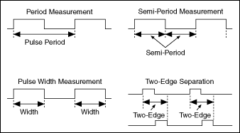

Measuring Period, Semi-Period, Pulse Width, and Two-Edge Separation
You can measure period, semi-period, pulse width, and two-edge separation using counters, such as on a DAQ device, to determine the duration of an event
or to determine the interval time between two events.
Period measurements measure the time between consecutive rising or falling edges of a pulse. Semi-period measurements measure the time between consecutive edges. Pulse width measurements measure the time between either a rising and falling edge, or a falling and rising edge. Two-edge separation measurements measure the time between the rising or falling edge of one digital signal and the rising or falling edge of another digital signal.

The formula for period, semi-period, pulse width, and two-edge separation is as follows:
Period, Semi-Period, Pulse Width, or Two-Edge Separation (in seconds) = Count / Counter Timebase Rate (in Hz).
where Count is the number of counter timebase ticks that elapse during one period, semi-period, pulse width, or two-edge separation of the measured input signal or signals.
The Counter Timebase Rate is a known frequency and is usually a built-in time source. If the counter timebase rate is unknown, you only can make measurements only in terms of ticks of the counter timebase. This may be the case if you are using an external signal for the counter timebase, and the frequency of the external signal is unknown or aperiodic.
 �Counter - Read Pulse Width and Frequency (On Demand)
�Counter - Read Pulse Width and Frequency (On Demand) �Add�
�Add�